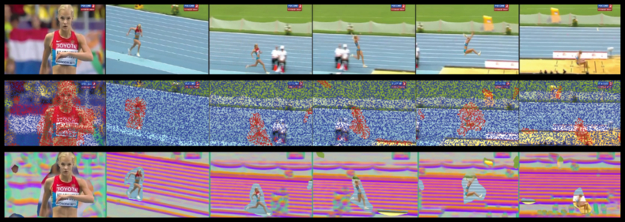

Camera Motion and Surrounding Scene Appearance as Context for Action Recognition
Fabian Caba Heilbron
Ali Thabet
Juan Carlos Niebles
Bernard Ghanem
KAUST, Universidad del Norte
ACCV 2014
Summary
This work introduces a framework for recognizing human actions in videos by incorporating
a new set of visual cues that represent the context of the action. We develop a weak
foreground-background segmentation approach in order to robustly extract not only foreground
features that are focused on the actors, but also global camera motion and contextual scene
information. Using dense point trajectories, our approach separates and describes the
foreground motion from the background, represents the appearance of the extracted static
background, and encodes the global camera motion that interestingly is shown to be discriminative
for certain action classes. Below we show an example of our foreground-background segmentation:

Resources
Download our ACCV 2014 Paper.
Check out our Poster presentation!
Code can be cloned from Here!
|
Acknowledgment
Research reported in this publication was supported by
competitive research funding from King Abdullah University of Science and
Technology (KAUST). F.C.H. was also supported by a COLCIENCIAS Young
Scientist and Innovator Fellowship. J.C.N. is supported by a Microsoft Research
Faculty Fellowship.
|
References
- H. Wang and C. Schmid. Action Recognition with Improved Trajectories. In ICCV, 2013.
If you use any of our materials in your research, please cite our ACCV 2014 paper:
F.C. Heilbron, A. Thabet, J.C. Niebles and B. Ghanem. Camera Motion and Surrounding Scene Appearance as Context for Action Recognition. In ACCV, 2014.
@article{caba2014cues,
title={{Camera Motion and Surrounding Scene Appearance as Context for Action Recognition}},
author={Heilbron, F.C. and Thabet, A. and Niebles, J.C. and Ghanem, B.},
journal={ACCV},
year={2014}
}